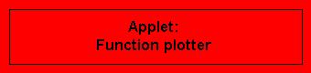

|
|
|
| Recognize functions 2 is a puzzle type game in which a set of given functional expressions and graphs shall be associated with each other. The functions involve negative powers and have singularities. These algebraic properties are reflected by geometric properties of the graphs (e.g. by the existence and position of asymptotes). The goal is to argue (qualitatively) when associating function <-> graph. The applet is started from the red button in its own window. |
| In the applet Recognize graphs 2, a puzzle type game, the goal is to recognize the functional expressions corresponding to a set of given graphs. The functions are of the form a + b/x or a + b/x2. The applet is started from the red button in its own window. |
|
The graphs of sin, cos and tan
are generated by the user by means of a scroll bar which controls the
motion of a point on the unit circle.
Emphasis is laid on the relation between the geometrically intuitive form of the
graphs are the corresponding numerical values.
It is helpful if the user already knows some elementary facts about
the trigonometric functions.
(See e.g. the applet
Definition of the trig functions).
If appropriate, the Tangens function may be ignored.
The applet is started from the red button in its own window.
Supplement: Also see our collection Graphs of elementary trigonometric functions and our collection Graphs of some exponential and logarithm functions. |
| Recognize functions 3 is a puzzle type game in which a set of given functional expressions and graphs shall be associated with each other. The functions are of the form a sin(b + c x) or a cos(b + c x) , i.e. are simple modifications of the Sine- and Cosine function whose properties (amplitude and frequency) shall be recognized in the graphs. The goal is to argue (qualitatively) when associating Sine- or Cosine function <-> graph. The applet is started from the red button in its own window. |
| In the applet Recognize graphs 3, a puzzle type game, the goal is to recognize the functional expressions corresponding to a set of given graphs. As in the previous applet, the functions are of the form a sin(b + c x) or a cos(b + c x) . The applet is started from the red button in its own window. |
|  You may also use the Function plotter in order to analyze the graphs of functions. On account of the hight accuracy achievable with this tool, it is in particular suitable for numerical studies. Clicking the red button calls a web page in a separate browser window, within which the applet is started. |
|
Gallery - Table of contents Maths links: online tools topics collections Welcome Page |